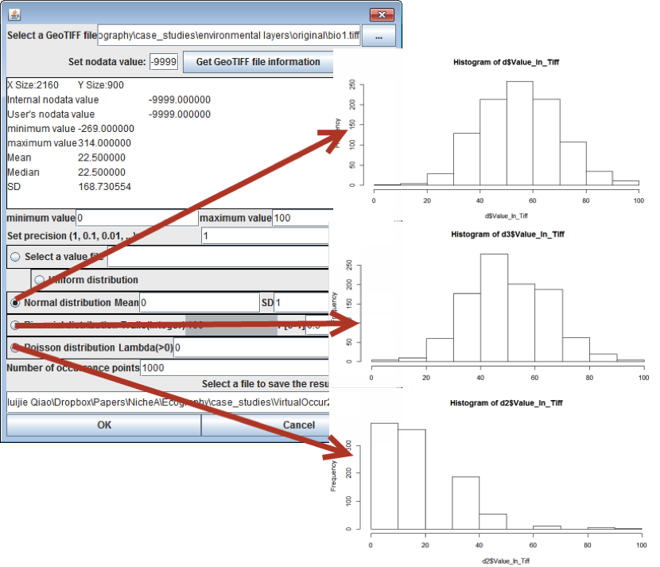

Virtual species - parameter
This function is used to generate a group of virtual occurrence points on a given map within a given probability distribution type. Fig. 1 shows results that were generated by different distribution types.
Figure 1. Results generated by different distribution types.
